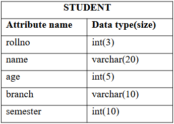
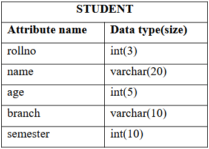
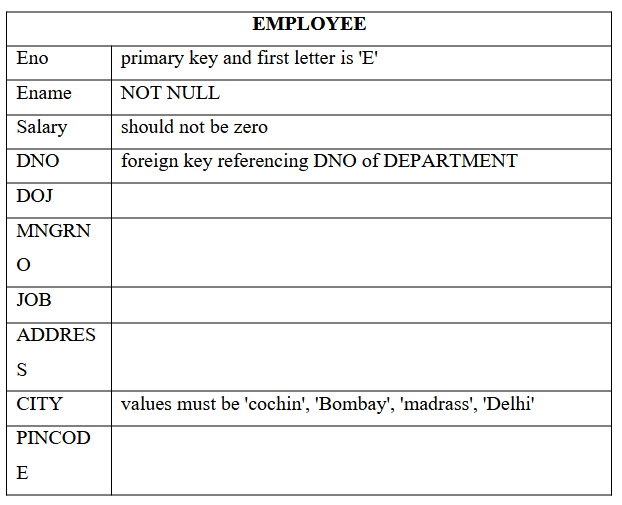
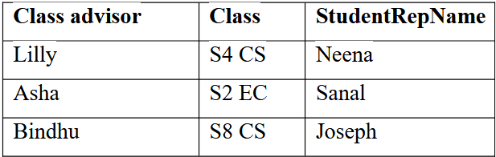
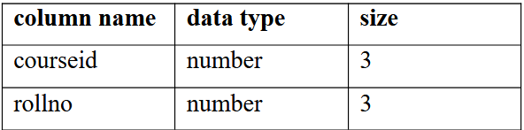
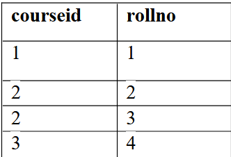
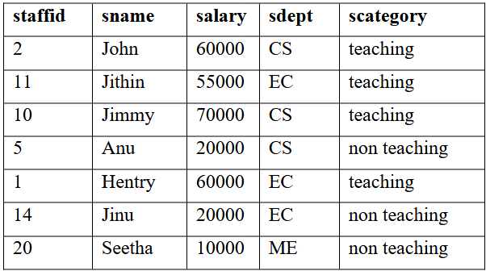

DBMS Lab CU S4 Model Engineering College
1) Familiarization of DDL Commands
- Create a database for the college
- Create 2 tables student and staff tables with following fields respectively.
 

- List out the tables present in the college database.
- Show the structure of student table, staff table.
- Insert values into student table and staff table (at least 3 rows)
- Alter the student table
- by adding a column called 'contact number'(int field) and insert values into the added field.
- by dropping a column named 'contact number'
- modify the existing column named 'semester'
- Retrieve all data present in student table.
- Rename student table as 'student details' and staff table as 'staff details'
- Delete all data present in the student table and staff table
- Drop student table as well as staff table
- Drop college database
Solution
2) Familiarization of DML Commands
- Create 2 tables employee and department with the corresponding field and constraints given below


- Insert values into employee and department tables


- Display all the employee details & department details
- Update the 'city' and 'salary' of employee whose Eid=E12 to 'cochin' and '70000'
- Display all the employee details & department details
- List the name of employees joined after 1-1-1998 and working in department number d10
- List all employees working in department other than department number d30
- List the name of employees working in department 'sales'
- List the name of employee who does not have a manager
- Display employees details whose city='cochin'
- List the HOD’s of different department
- Find out who is the HOD of department D20
- Delete employee whose Eid=E15 from employee table
- Delete employees whose city='Delhi'
- Delete all the employees from employee table
Solution
3) Familiarization of TCL Commands
- Create a database for bank & create a table with name 'savings-account'. The fields are CID, cname, balance, date of joining.
- Add 2 records to the 'savings-account' table
- Display the values of 'savings-account' table
- Make the changes permanently
- Add 2 more records to the 'savings-account' table
- Display all the records of 'savings-account' table
- Modify the balance amount by adding the interest of 6%
- Display all the records of 'savings-account' table
- Abandon the last changes
- Display all the records of 'savings-account' table
- Add a marker to the changed state as 'A'
- Add two more records to the 'savings-account' table
- Display all the records of 'savings-account' table
- Modify the balance amount by adding the interest of 6%
- Display all the records of 'savings-account' table
- Add a marker to the changed state as 'B'
- Delete one record from the 'savings-account' table
- Display all the records of 'savings-account' table
- Abandon the last deletion (i.e., recover the table with deleted row)
- Display all the records of 'savings-account' table
- Abandon to save point/marker 'A'
- Display all the records of 'savings-account' table
Solution
4) GROUP BY, ORDER BY & HAVING CLAUSE
- Create a table called 'members' to store member’s details of a family in the 'family' database. The attributes of the table are (mno, mname, mage, role, gender). This family consists of twins
- Insert following values into 'members' table.

- Returns all the gender entries from the 'members' table
- Retrieve unique values for genders
- Returns all member’s name, age, role from 'members' table
- Select any one child who is eligible for voting
- Find out the total number of males and females in the given family
- Select all the eligible candidates' details for voting in the given family
- Arrange members of the family in increasing order of age
- Arrange members of the family in decreasing order of age
- Identify twins in the family and display their details
Solution
5) Familiarization of DCL Commands
- creates two new users with names 'student' and 'teacher'
- grant a CREATE TABLE and INSERT privileges to the teacher user and create a table named 'advisors' with the following data

- Grant SELECT Privilege to teacher user in 'advisors' table
- Grant more than one Privilege (such as ALTER, DELETE) to teacher user and delete records corresponding to S8 CS students since they left college. Add 1 more column called 'studentscount' in 'advisors' table
- Grant the GRANT Privilege to teacher user in 'advisors' table
- Allows a teacher user to grant SELECT access rights to student user in 'advisors' table
- Grant an UPDATE privilege to all users in 'advisors' table and update the S4 CS & S2 EC’s students count as 40 and 45 respectively (using PUBLIC option)
- Grant a DROP privilege to all users in 'advisors' table (using '*'@'localhost' option)
- Grant all the Privilege to teacher user in 'advisors' table
- Check the Privileges Granted to different users
- Revoke SELECT Privilege from teacher user in 'advisors' table
- Revoke more than Privilege (UPDATE, DROP, ALTER, DELETE) from teacher user in 'advisors' table
- Revoke a SELECT privilege from all users in 'advisors' table
- Revoke All the Privilege from student user in 'advisors' table
- Revoke All the Privilege from teacher user in 'advisors' table
- Check the Privileges Granted to different users
- create a role called "developer"
- grant the role to users named student and teacher
- grant CREATE TABLE, insert, select, delete, alter, drop privileges to the ROLE developer
- Check the Privileges Granted to a developer role
- Revoke an INSERT privilege granted to developer role
- Revoke all the privileges granted to developer role
Solution
6) Aggregate functions
- Consider a student table with the following data.

- Compute average marks & age of students
- Compute total number of students
- Compute number of students with unique/distinct age
- Compute maximum marks (as Maxmarks) & age (as Maxage) among students from the Student table
- Compute minimum marks (as Minimum marks) & age (as Minimum age) among students from the student table
- Compute summation of total marks (Total Marks) among students from the Student table
- Count number of non-NULL marks fields in student table
- Find the maximum marks of students whose age=19
- Count the number of distinct age values in the table
- Compute highest marks in each department
- List out different departments in which students are studying
- Display name of the students who secured top marks in each department
- Display number of weak students (marks<50) in each department
- Find out name of the department and the number of students who secured more than 80 marks for department ranking, only departments with more than 2 students are eligible for ranking
- For each department, retrieve the department name, and average marks of students in that department
- List the number of students in each department. Only include departments with more than 1 student
- Find out the students with the same name
- Find the number of students with the same age
Solution
7) Set operators, Nested queries and JOIN queries
- Nested Queries
- Create 3 tables student (SID, sname, sage), course (CID, Cname), and student-course (SID, CID)
- Display details of all the 3 tables
- Find out student ID (SID) who are enrolled in course name 'DSA' or 'DBMS'
- Find out names of students who are either enrolled in 'DSA' or 'DBMS'
- Find out the names of students who are neither enrolled in 'DSA' nor in 'DBMS'
- Find out the names of students who are enrolled in course ID 'C1'
Solution
- SET operations
- Returns all distinct rows from 2 tables. (UNION)
- Returns all rows from 2 tables. (UNION ALL)
- Returns all distinct rows common to both tables (INTERSECT)
- Returns all rows common to both tables (INTERSECT ALL)
- Returns all distinct rows from 'books' table that are not in 'movies' table. (EXCEPT)
- Returns all rows from 'books' table that are not in 'movies' table. (EXCEPT ALL)
Solution
- JOIN operations
- Create student table with following fields

- Insert the following values into student table

- Create studentcourse table with following fields

- Insert the following values into studentcourse table

- Display all the values of employee table
- Display all the values of customer table
- Select NAME and Age from Student table and COURSEID from StudentCourse table. (cross join)
- Each row of the student table is joined with itself and all other rows depending on some conditions (e.g., a.ROLL_NO < b.ROLL_NO). (self join)
- Show the names and age of students enrolled in different courses. (equi join)
- Perform natural join on 'student' and 'studentcourse' table
- Perform left join on 'student' and 'studentcourse' table
- Perform right join on 'student' and 'studentcourse' table
- Perform full outer join on 'student' and 'studentcourse' table
Solution
8) VIEW and ASSERTION
- Create a staff table with arguments staffed, sname, salary, sdept, scategory. Scategory can take 2 values (teaching/ non teaching) only
- Insert the following values into staff table

- Display the details of staff table
- Create a view named 'faculty' for teaching staff and 'non-faculty' for non-teaching staff
- Display the contents of 'faculty' & 'non-faculty' views
- Update the salary of non-teaching staff whose staffed=20 to 15000 in corresponding view
- Display the contents of 'non-faculty' view
- Display the contents of staff table
- Delete the details of staff whose staffed=11 from 'faculty' view
- Display the contents of 'faculty' view
- Create another table called 'departmenthead' with following details

- Create an assertion that specifies the constraint that the salary of a staff must not be greater than the salary of the HOD in which the staff works for
- Create an assertion that ensures the number of non-teaching staff is less than the number of teaching staff in a department
Solution